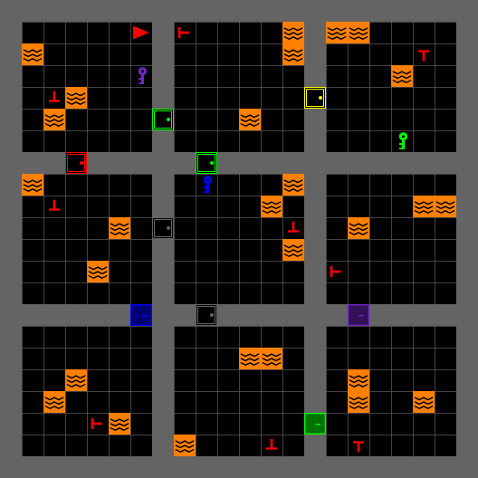
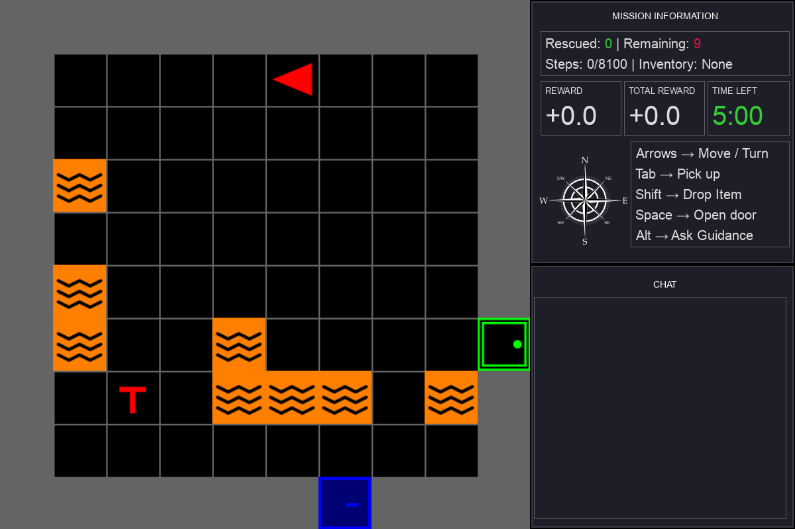
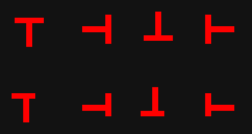
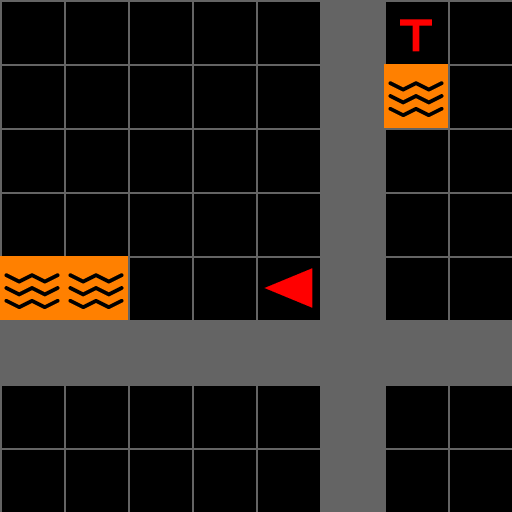
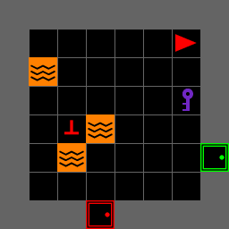
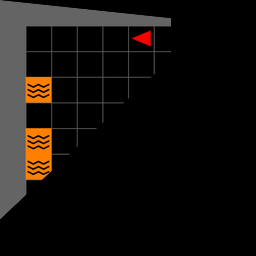

MOSAIC
A Modular Testbed for
Human–AI Collaboration
Hands-on Search-and-Rescue Tutorial
IEEE SMC 2026 · Bellevue, WA
iHuman Lab · Oklahoma State University
October 4, 2026
Meet the iHuman Lab
We study how people and intelligent systems work together.

Hemanth Manjunatha Principal Investigator

Elahe Oveisi PhD Student
Bennett Kwaku Dogbey PhD Student
Our work spans brain–computer interfaces, human–robot interaction, AI-assisted decision-making, and cognitive augmentation.
Part One
Understanding MOSAIC
Why it exists → What it connects → What we can study
What it is Install Use it
Why Do We Need MOSAIC?
A human–AI experiment requires more than an AI model.
01
Meaningful decisions
Assistance should have the opportunity to change what a participant does.
02
Repeatable conditions
Tasks and study settings should be comparable across participants.
Human–AI
STUDY
one coordinated system
03
Synchronized evidence
Actions, advice, outcomes, and optional sensors need a common time base.
04
Reconfigurable studies
Researchers should vary conditions without rebuilding the core task.
MOSAIC brings these requirements together in one research platform.
What Is MOSAIC?
A modular software testbed for controlled, interactive human–AI collaboration research.
Human participant
Sees the task and chooses each action.
actions
observations
MOSAIC
Task environment, interface, and session control.
task state
advice
AI advisor
Receives an observation and returns guidance.
recorded together
Session record Participant actions, advice requests, AI responses, task states, and outcomes share one timeline.
Gymnasium + MiniGrid Human-only, human–AI, or programmatic Optional sensor streams can share the session time base
MOSAIC connects the task, the participant, the advisor, and the evidence needed to study their interaction.
The First Testbed: Search and Rescue

Mission
Search a multiroom building and rescue the real victims.
Sources of difficulty
- Locked rooms require the correct key
- Lava constrains safe routes
- Configurations can add decoys and health pressure
- Time and step limits create urgency
Where should I search? Whom should I rescue? When should I rely on AI advice?
How Human–AI Collaboration Happens
The participant can act independently or ask for advice at any decision point.
1 Observe
Inspect the current room and mission state.
2 Decide
Act alone or request advice.
3 Act
The participant always chooses the final action.
4 Outcome
The environment updates and the cycle repeats.
Optional advice path
Request guidance
Evaluate the response
returns to the participant
Recorded throughout Task state · advice request · AI response · participant action · outcome
The central question is when and how AI advice changes human decisions.
What Can Researchers Study?
Reliance
When do people request, follow, or reject AI advice?
Advice quality
How do correct, incorrect, or uncertain recommendations affect decisions?
Human state
How do time pressure and workload affect collaboration?
Interface design
How do explanations, alerts, and feedback affect performance and trust?
Extend the question Compare AI models, advisory strategies, task configurations, or sensing conditions.
Next, we will install MOSAIC, launch a mission, and change the task ourselves.
Part Two
Install and verify
Check · Clone · Install · Verify · Run
What it is Install Use it
Before You Start
Four checks before we touch the terminal.
Local graphical session
The GUI needs a machine with a working display.
The environment itself can run headless; today’s interface cannot.
No API key required
The core tutorial runs without contacting an AI provider.
AI-advisor setup remains an optional capability covered later.
Our shared checkpoint: the core environment and GUI both import successfully.
Step 1 · Get the Code and Create an Environment
Checkpoint
Your prompt should begin with (mosaic_env), and Python should report version 3.10 or 3.11.
Choose either venv or Conda. Ubuntu users who see ensurepip is not available should install python3-venv, remove the incomplete mosaic_env, and repeat the step.
Step 2 · Install MOSAIC
Run these commands inside the active virtual environment.
The final installation should include mosaic, minigrid, pygame-ce, pygame_gui, and tabulate.
Temporary development workaround. The current package metadata installs plain pygame, while pygame_gui uses pygame-ce. Reinstalling pygame-ce last gives the GUI the implementation it expects. Pip may still report that MOSAIC declares pygame; the readiness check on the next slide verifies the runtime.
Step 3 · Verify the Installation
Check the runtime before building the first mission.
Expected:
Then verify both MOSAIC entry points:
Installation is complete. Next, we will see how a MOSAIC mission is built and played.
Step 4 · Run MOSAIC
Launch the included interactive mission from the MOSAIC repository root.
The game window opens and the arrow keys move the agent. Press Esc to close it.
Keep the environment active and run the command from the cloned mosaic directory. No additional repository, notebook, or Python file is required.
Part Three
Using the search-and-rescue testbed
Inspect the interface · Modify the mission · Compare options
What it is Install Use it
How MOSAIC Fits Together
MOSAIC connects a human-facing interface to a configurable search-and-rescue environment.
Human participant
Observes the task, moves, interacts, and requests advice.
MOSAIC GUI
Game view · mission information · chat · event vignette
actions ↓ · observations + feedback ↑
SAR environment
Rooms · victims · hazards · doors and keys · rescue actions
Gymnasium episode interface · MiniGrid grid world
Optional AI advisor
Receives a task description and returns text advice through LLMClient.
Human ↔︎ GUI controls and visual feedback
GUI ↔︎ SAR actions, observations, reward, and events
Advisor ↔︎ GUI request and text response
The Game Interface

1 2 3 4 5 6
1 Agent Position and facing direction
2 Victim Target to identify and rescue
3 Lava Hazard that constrains safe routes
4 Mission information Rescue count, steps, reward, and time
5 AI chat Requested guidance and system messages
6 Edge vignette Event feedback flashes around the game view
Victims, Hazards, and Access

Real victim symmetric cross · counts toward the mission
Decoy victim offset cross · penalizes a mistaken rescue
Four orientations Victims may face up, down, left, or right.
Lava Orange tiles make parts of the route unsafe.
Locked doors A matching colored key is required before entry.
Placement rules Placers determine how many objects appear and where they can be placed.
The default VictimPlacer places real victims. A custom placer can add decoys or other placement rules.
Controls and Gameplay
| Key | Action |
|---|---|
↑ |
Move forward |
← → |
Turn left or right |
Space |
Open a door |
Tab |
Rescue or pick up |
Left Shift |
Drop the carried key |
Alt |
Ask a configured AI advisor |
1 Observe Read the grid and mission panel.
2 Navigate Move around hazards and find access routes.
3 Identify Distinguish the target before acting.
4 Rescue Face the victim and press Tab.
Backspace restart · F11 fullscreen · Esc quit
Camera Views

Moving viewport
EdgeFollowCamera follows the agent and may show parts of neighboring rooms.

Current room
AgentFOVCamera shows the complete room occupied by the agent.

Forward visibility
AgentConeCamera blacks out tiles outside MiniGrid’s forward field of view.
These are real renders of the same seeded world and agent position. Only the camera strategy changes.
The Included Mission
# src/experiment/main.py
env = build_sar_env(
screen_size=800,
num_rows=3,
num_cols=3,
room_size=10,
victim_placer=LavaRiskVictimPlacer(
num_real_victims=game_config.get("num_real_victims", 6),
num_fake_victims=game_config.get("num_fake_victims", 12),
),
lava_placer=SectorSpreadLavaPlacer(
lava_per_room=game_config.get("lava_per_room", 8)
),
locked_room_placer=LockedRoomPlacer(locked_room_prob=0.5),
camera_strategy=AgentFOVCamera(),
)
gui = SAREnvGUI(env, config=config, llm_client=llm_client)
gui.run()World Rows, columns, and room size define the building.
Task logic Placers configure the victims, hazards, and access rules.
Interface The camera selects the view, then SAREnvGUI starts the interaction loop.
Change the Task
Edit the included runner, change one setting, and launch the same command again.
| Change | Code setting | What the player experiences |
|---|---|---|
| Smaller building | num_rows=2, num_cols=2 |
Four rooms instead of nine |
| Fewer hazards | SectorSpreadLavaPlacer(lava_per_room=2) |
More safe routes |
| More locked rooms | locked_room_prob=0.50 |
More key and door decisions |
| More rescue targets | num_real_victims=2 |
More victims in each room |
| Different visibility | camera_strategy=AgentConeCamera() |
Forward visibility only |
Victim and lava counts apply to each room. Change one value at a time, save the file, and repeat the Step 4 launch command.
Add an AI Advisor
MOSAIC keeps provider setup outside the game and exposes one text advice interface.
Observation
Current task state
Prompt builder
State becomes text
LLMClient
Provider-independent query
Response processor
Reply becomes advice
Chat panel
Participant sees the result
DummyLLMClient supports offline testing. Provider setup and custom prompt processing remain optional and are covered in the documentation.
MOSAIC Extension Points
Start with the defaults, then replace only the behavior your application needs.
Task world
Use placers and actions to change objects, placement rules, hazards, and outcomes.
Observation
Choose a camera strategy or provide a custom observation processor.
Human interface
Customize user input, information and chat panels, or event feedback.
AI support
Inject an LLMClient, prompt builder, and response processor when advice is needed.
The same environment can begin as a playable task and grow into a tailored human–AI application.

Thanks!
Questions?
bennett.dogbey@okstate.edu
Appendix
Technical notes and troubleshooting
Installation Troubleshooting
| Symptom | Recovery |
|---|---|
cannot import name 'DIRECTION_LTR' |
Reinstall pygame-ce using --force-reinstall |
module 'pygame' has no attribute 'surface' |
Plain pygame removed shared files; force-reinstall pygame-ce |
ensurepip is not available |
Install python3-venv, delete mosaic_env, and create it again |
PowerShell cannot load mosaic_env |
Run .\mosaic_env\Scripts\Activate.ps1 with the leading .\ |
No module named 'mosaic' |
Activate mosaic_env and rerun python -m pip install -e . |
No module named 'experiment' |
Run from the repository root and set PYTHONPATH=src for the current shell |
| GUI opens on no display | Run locally rather than through a headless or SSH-only session |
No module named 'tabulate' |
Run python -m pip install tabulate |
The current package metadata installs plain pygame, while pygame_gui expects pygame-ce. Both use the pygame namespace, which makes the force-reinstall step necessary.
Step Observation
The SAR environment can return an enriched observation at each step:
grid contains an integer-encoded snapshot of the world, including walls, hazards, victims, doors, and keys.
The four cam_* fields come from the default EdgeFollowCamera. AgentConeCamera and AgentFOVCamera do not currently add those fields.
Applications can store these observations for frame reconstruction and later analysis.
The Advisor Contract
The base interface knows nothing about SAR, prompts, or GUI panels.
A custom advisor subclasses LLMClient and implements query. Provider setup remains outside the reusable game.
Where MOSAIC Is Headed
PyPI Release Next
Package installation without cloning the source repository or applying the current dependency workaround.
Planned packaging improvement
Gymnasium Registration Next
Gymnasium registration for creating the SAR environment through gym.make(...).
Planned public entry point
JOSS Submission Next
A citable software paper describing the reusable package and its research purpose.
Submission in preparation
Beyond SAR Later
Adapt the same interfaces to collaborative tasks beyond search and rescue.
Longer-term direction

MOSAIC Tutorial · iHuman Lab · Oklahoma State University